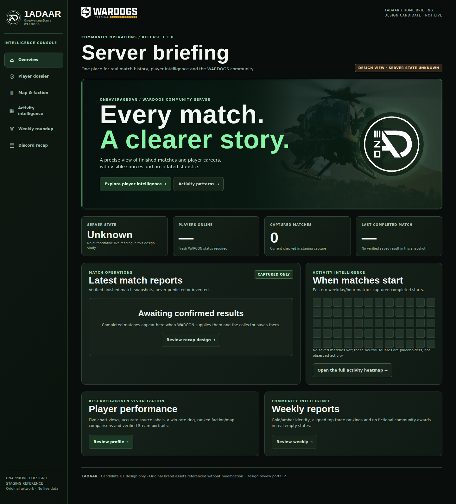
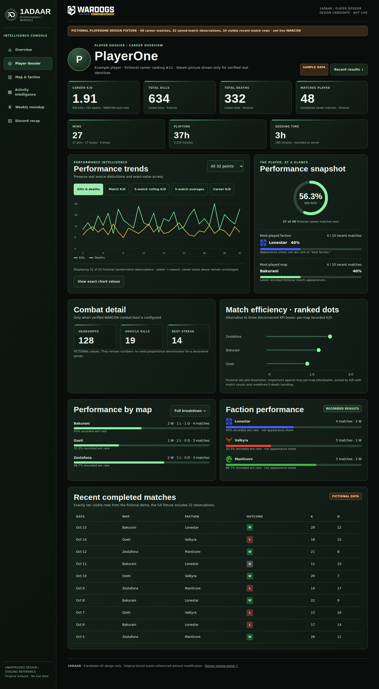
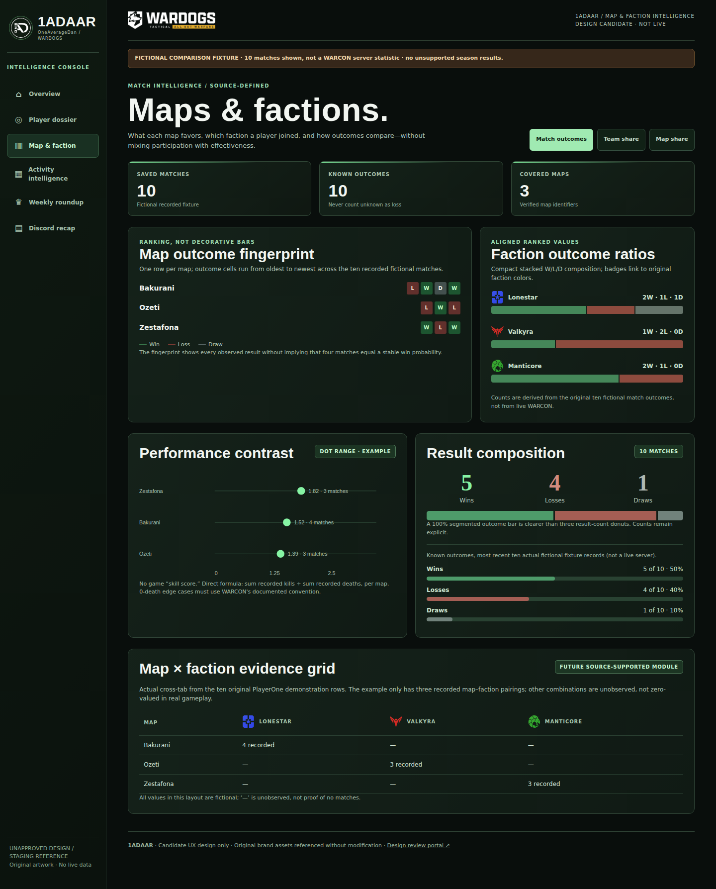
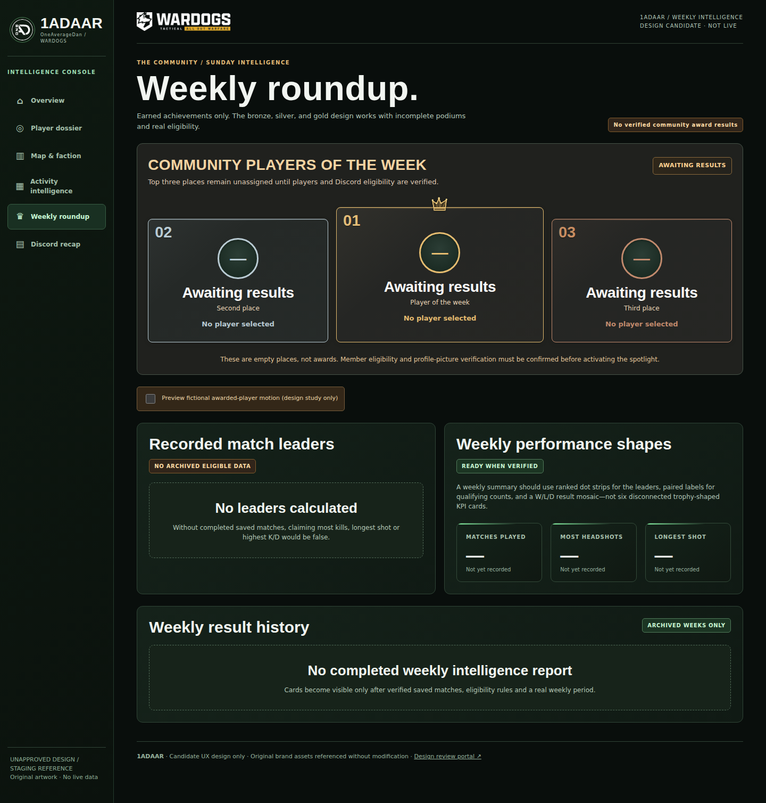
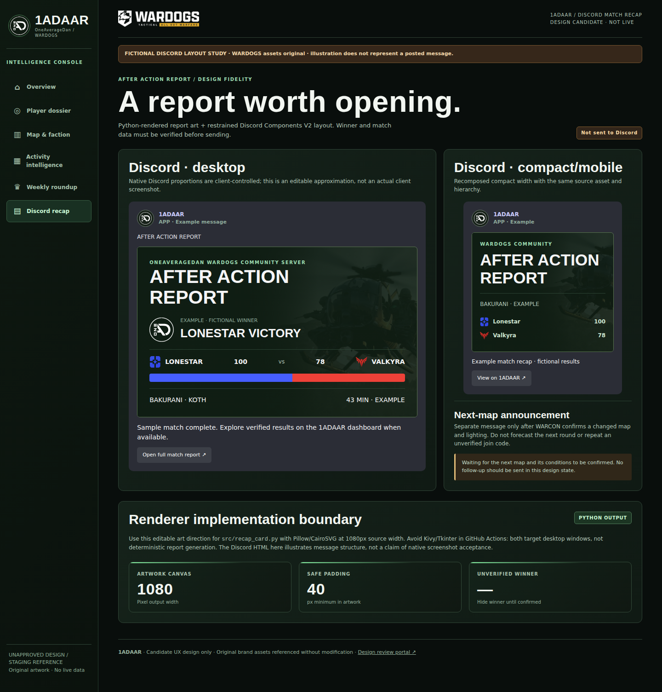
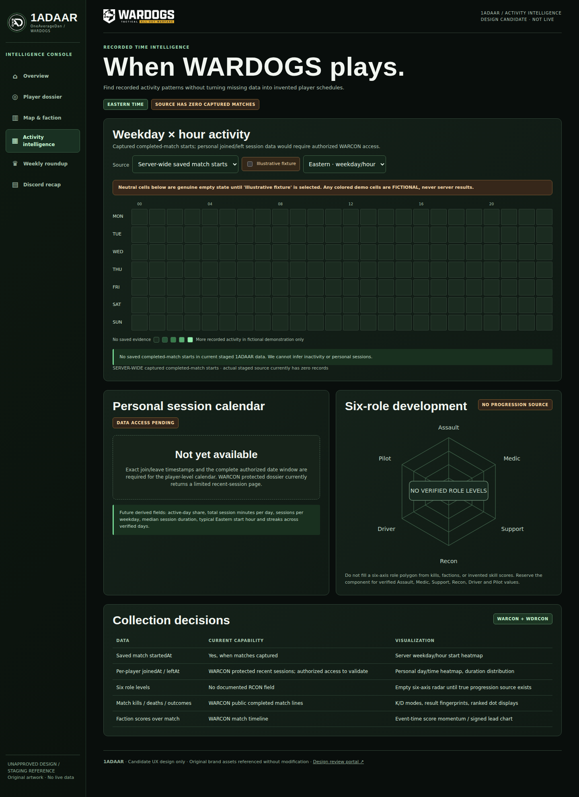

More than a facelift.
Intelligence made legible.
Six editable screen studies with genuine desktop/mobile browser captures, informed by source-verified WARCON/RCON capabilities. These are the proposed visual source, not a deployed game experience. Open each screen, inspect behavior, compare screenshot evidence and approve or request changes by name.
OWNER APPROVAL PENDING · PRODUCTION UNCHANGED
Main briefing
Hero, official marks, real-status modules, empty captured-match states
Open editable prototype ↗
Player dossier
Steam portrait treatment, career KPIs, five trend modes, one donut, appearance bars
Open editable prototype ↗
Maps and factions
Faction outcome fingerprint, ranked dots, map/team crosstab
Open editable prototype ↗
Weekly roundup
Verified empty podium, isolated fictional crown reveal
Open editable prototype ↗
Discord AAR
Editable desktop/mobile Discord hierarchy, original faction and game brand art
Open editable prototype ↗
Activity intelligence
Captured match-start activity, personal-session future gate, unfilled six-role radar
Open editable prototype ↗Engineering handoff and evidence
Screen manifest and source targets ↗ · Candidate tokens ↗ · Component specification ↗
Analytics chart review ↗ · Source-to-design discrepancies ↗ · GitHub PR #28 ↗
Assets reference the original 1AD/WARDOGS/faction files from this repository. The prototype shows actual empty states and explicitly labeled fictional examples; no fabricated live winners or player progression.